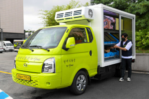

식품 사막 해결 방안
현재 대한민국은 고령화 사회이며, 주로 농어촌 및 지방에서 인프라가 부족해 식품 사막 현상이 일어나고 있습니다. 이와 같은 유사성을 가진 일본의 사례를 참조해 해결방안을 제안합니다.

1. 식품 배달 트럭
일본 대도시인 요코하마시 호도가야구를 중심으로 식량 사막을 조사하기 위해 GIS 분석 결과, 65세 이상 노인 17,000여 명을 포함하여 약 78,000명이 신선 식품에 대한 접근성이 좋지 않은 것으로 나타났습니다. 이는 호도가야 구 주민의 최대 35%가 식량 사막에 살고 있음을 의미합니다. 이를 해결하기 위해서는 히타치시의 사례를 확인할 수 있습니다. 히타치시에서는 이동형 슈퍼마켓을 활용하여 식품 접근성이 부족한 지역에 식료품을 공급했습니다. 이 연구는 경로 최적화를 통해 일주일 간 이동 거리를 약 30km 줄일 수 있었다는 결과를 제시하며, 이러한 방식이 식품 트럭 사업의 지속 가능성을 높이는 데 기여했습니다.
2. 지역 농협과의 협력
일본에서는 지역 농협인 JA Group이 식품 사막 문제 해결에 적극적으로 참여하고 있습니다. JA Group은 특히 ZEN-NOH라는 전국 연합을 통해 지역 농민들과 협력하여 농산물을 소비자에게 직접 공급하는 체계를 갖추고 있습니다. 이를 통해 농촌 지역의 식품 공급을 안정적으로 유지하고, 접근성이 낮은 지역에도 신선한 농산물을 전달하는 데 기여하고 있습니다. 또한, JA Group은 사회적 책임 활동의 일환으로, 지방 농촌 지역의 활성화를 위해 농산물 유통 외에도 농업 교육 및 지역 사회 환경 보호 프로그램을 운영하고 있습니다.
위와 같은 일본의 예시를 참고하여 채움채움은 지역 농협과 협업을 통해 농어촌으로 지역 농협이 배달 서비스를 운영하는 해결방안을 만들었습니다. 온라인으로 필요한 물품을 주문하고, 지역 농협이 정기적으로 신선식품을 배달하여 식품 사막 해결에 기여합니다.